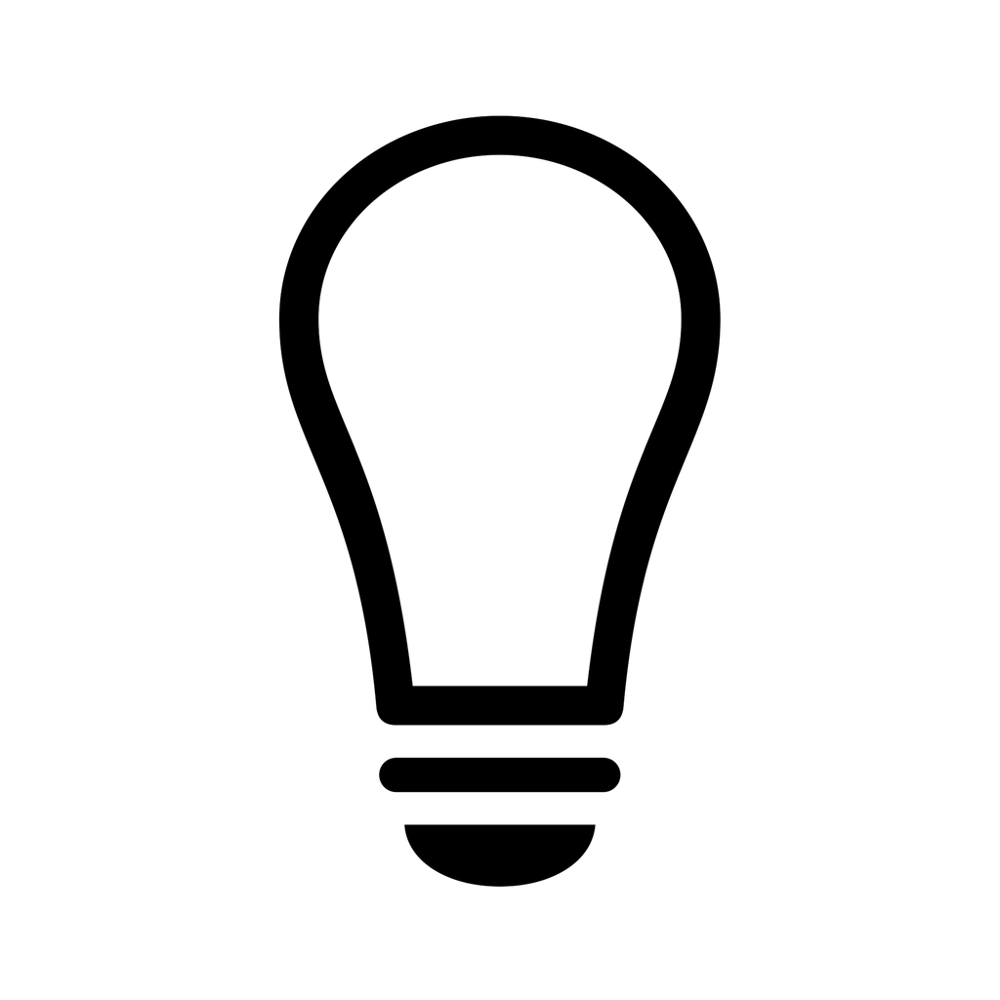

01找到一本，接着读
真实书封与继续阅读优先。导入、搜索、排序各归其位。

书灯视觉与交互设计 · 01AI 照亮你读不懂的地方。
真实书封与继续阅读优先。导入、搜索、排序各归其位。
阅读页收起次要操作。选中文字后，帮助就在手边。
保留选文，解释带出处。点引用回到原文，收起即回到阅读。
可直接点击手机中的按钮。
书籍、进度与回答均为演示数据，不连接 AI 服务。
沿用原应用图标，保留品牌识别。
灯光暖色只用于强调提问、选文与依据。
书封保留各自颜色，界面使用一套克制的配色。
保留书架、笔记、对话、我的四栏。
阅读与问答共享上下文，返回原文始终明确。
这是一份可点击的高保真设计稿，用于评审视觉、信息层级与核心操作流程。它没有修改当前模拟器里的 v0.1.0，也没有读取你的书库、Key 或问答记录。设计中的间距、字号和颜色规范见设计说明。
《Pride and Prejudice》封面来自项目已有公版 EPUB。其余书封展示“没有原封面时”的书名排版方案。原应用图标按你的决定沿用；界面小图标采用 Phosphor，原生实现时映射为统一风格的 SF Symbols。